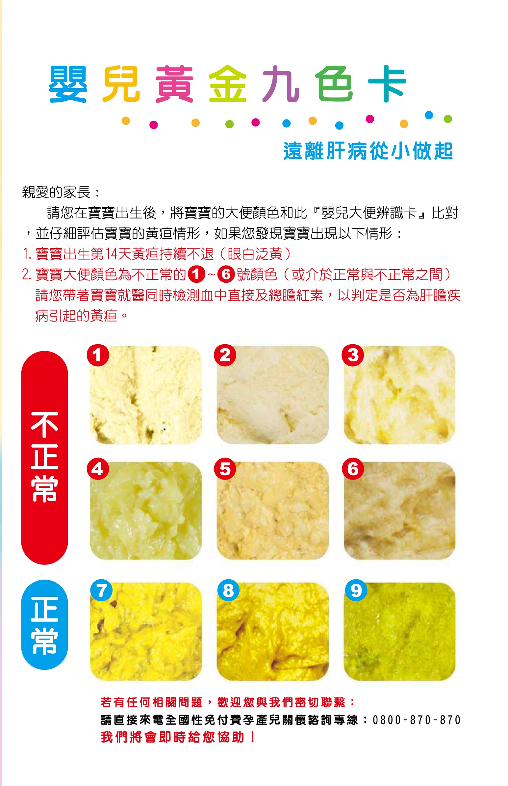
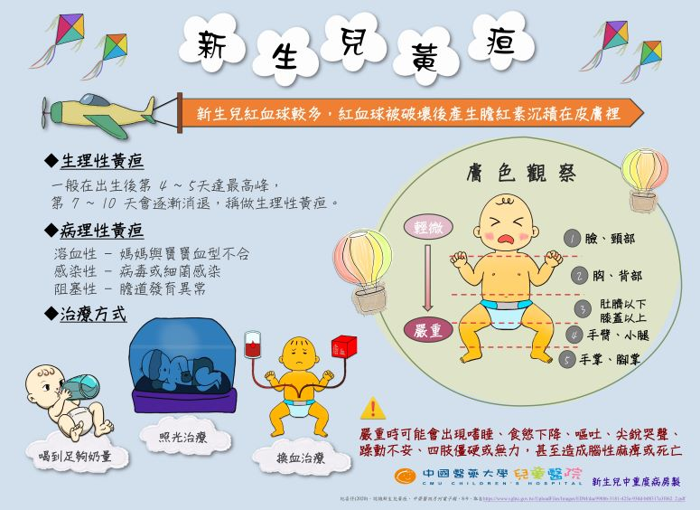
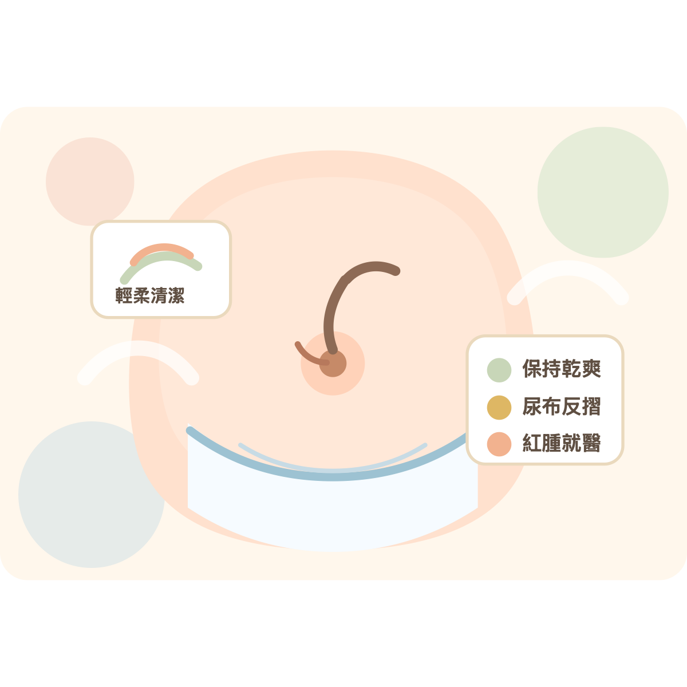

新生兒安心育兒指南
獻給即將迎接新生命、正在重新調整家庭節奏的你。願這本指南像一盞溫暖的小夜燈，陪你在餵奶、換尿布、安撫哭聲與自我照顧之間，慢慢找到適合家裡的節奏。
- 月子與產後準備
- 新生兒健康觀察
- 餵奶、脹氣與吐奶
- 皮膚照護與成長練習
給所有正在迎接新生命的家庭
寶寶來到世界的那一天，家裡多了一個小小的人，也多了好多以前沒有想過的問題：他為什麼哭？奶喝夠了嗎？黃疸正常嗎？臍帶要怎麼照顧？媽媽的心情怎麼突然變得好脆弱？
這份指南不是要把你變成完美父母，而是把新生兒照顧中最常遇到的事情，一件一件拆開來說清楚。你會看見待產與月子的選擇、寶寶出生後的觀察重點、餵奶與混合餵養、哭鬧與抱法、脹氣與吐奶、肌膚照護、抬頭練習，也會看見爸媽自己的休息與支持系統。
請把這本指南當成陪伴，而不是壓力。每個寶寶的氣質、發展、喝奶量和睡眠節奏都不同；每個家庭的資源、工作安排和支持系統也不同。你可以挑需要的章節先看，慢慢建立屬於你們家的照顧方法。
認識我
親愛的讀者你好，我是郭品震。因為工作與生活中接觸到許多年輕家庭，我深深明白，迎接新生命的喜悅背後，也常伴隨著不安、疲憊與許多來不及問出口的問題。
我希望這本《新生兒安心育兒指南》不只是一本整理知識的電子書，更像是一份可以放在手機裡、需要時就打開看的陪伴。從寶寶出生後的第一口奶、第一次哭鬧、第一次黃疸追蹤，到家人如何安排月子、照顧彼此、為孩子的未來做準備，每一個細節都值得被溫柔看待。
育兒不是一場單靠意志力撐過去的考驗，而是一段需要資訊、支持與安心感的旅程。我期待用清楚、好懂、貼近生活的方式，陪你把複雜的照顧問題慢慢拆開，讓爸媽在忙亂之中也能多一點方向。
一個爸爸的育兒初心
從家庭出發，理解每一位爸媽想守護孩子的心。
我不只是站在專業角度整理育兒資訊的人，我也有自己的家庭，是一位爸爸，也是一位女兒的父親。真正成為爸爸之後，我更深刻明白，育兒不是書上幾個標準答案就能解決的事，而是每天在生活裡練習：練習理解孩子、練習和伴侶分工，也練習在忙亂中讓家保持溫暖。
看著女兒一天天長大，我常常想，父母真正想給孩子的，不只是吃飽穿暖，而是一個有安全感、有支持、有未來準備的家。也因為這樣，當我陪伴不同階段的爸媽討論育兒與家庭規劃時，我特別能理解那份「想把孩子照顧好，卻又怕自己做得不夠」的心情。
這份指南，就是從這樣的心情出發。我希望它不是冷冰冰的知識整理，而是能陪你在寶寶出生後最手忙腳亂的日子裡，少一點不確定，多一點可以照著做的方向。當你半夜抱著寶寶、心裡充滿疑問時，希望它能提醒你：你不是一個人，你正在學習，而你已經很努力了。
目錄
新生命開始前：月子、待產與家庭分工
寶寶出生以前，爸媽最常煩惱的不是「要不要愛孩子」，而是「到底要怎麼安排才不會亂成一團」。月子地點、照顧人手、待產用品、產後休息方式，都會影響前幾週的生活品質。
待產前可以先準備的事
證件與文件
- 媽媽身分證、健保卡、孕婦健康手冊。
- 產檢資料、過敏史、用藥紀錄與醫師提醒事項。
- 住院或生產相關文件，可先向醫院確認是否需預填。
- 緊急聯絡人、交通方式、醫院停車與報到位置。
媽媽待產包
- 前開式睡衣、哺乳內衣、免洗內褲或產褥褲。
- 產褥墊、衛生棉、盥洗用品、拖鞋、毛巾。
- 保溫杯、簡單點心、充電器、行動電源。
- 讓自己安心的小物，例如護唇膏、髮圈、薄外套。
寶寶用品
- 出院衣物、包巾、帽子、紗布巾。
- 新生兒尿布、濕紙巾或乾濕兩用巾。
- 汽座或安全提籃，出院搭車前先確認安裝方式。
- 若醫院會提供部分用品，可先詢問避免帶太多。
家中先整理好
- 寶寶睡眠空間保持平整、乾淨，不放鬆散棉被和玩偶。
- 尿布、濕巾、替換衣物放在順手位置。
- 奶瓶、消毒用品、溫奶或沖泡空間先規劃好。
- 冰箱可準備簡單餐食，減少出院後臨時張羅。
月子中心
- 適合想要有護理師、嬰兒室、餐食與照護流程支援的家庭。
- 優點是專業支持明確，媽媽較容易休息，也能學習餵奶、拍嗝、洗澡等技巧。
- 需要考量費用、距離、入住天數、探訪規定與是否符合家庭預算。
在家休養
- 適合家中有穩定照顧人手，或希望在熟悉環境恢復的家庭。
- 優點是自在、彈性高，家人能更早建立與寶寶相處的默契。
- 需要事先安排煮食、清潔、夜間協助與媽媽休息時間，避免所有事情落在同一個人身上。
待產前可以先談好的三件事
待產包與回家前確認清單
這一頁可以當成出發去醫院前、以及出院回家前的快速檢查。重點不是帶最多，而是讓媽媽、寶寶和主要照顧者都能少一點慌張。
去醫院前
- 證件、健保卡、孕婦健康手冊與產檢資料放同一袋。
- 手機充電器、行動電源、眼鏡、常用藥品先放好。
- 先確認醫院報到地點、停車方式與夜間入口。
- 把家人聯絡順序寫清楚，避免陣痛時臨時找人。
出院回家前
- 確認寶寶黃疸、體重、餵奶與回診時間。
- 問清楚肚臍照護、洗澡方式、疫苗或篩檢追蹤。
- 汽座先安裝好，寶寶上車前確認安全帶鬆緊。
- 回家第一晚先求穩，不急著接待訪客或整理家務。
可以貼在手機備忘錄的 6 件事
出生後第一週：初乳、胎便、黃疸與肚臍
寶寶出生後的第一週，很多狀況看起來嚇人，其實多半是新生兒正在適應世界。爸媽要做的，是知道哪些屬於常見變化，哪些需要詢問醫護人員。
初乳與第一次哺乳
產後前幾天的乳汁量可能不多，但初乳濃縮了珍貴營養與抗體。若媽媽與寶寶狀況允許，可在醫護協助下進行肌膚接觸與第一次哺乳。剖腹產媽媽也可以在回病房、傷口安全的情況下開始嘗試。

溫和哺乳示意：剛開始親餵時，重點是讓寶寶靠近媽媽、確認含乳姿勢與吸吮狀況。圖片來源：Wikimedia Commons / USDA Public Domain。
- 新生兒胃容量很小，不需要用成人想像中的奶量衡量。
- 持續讓寶寶吸吮，有助於刺激乳汁分泌。
- 若疼痛、含乳困難或寶寶吸吮效率差，可及早請護理師或泌乳專業協助。
胎便與便便顏色
剛出生的便便常是深綠或黑綠色胎便，之後會逐漸轉為黃綠、金黃色或依餵養方式略有差異。爸媽可以觀察顏色、次數、濕尿布量與寶寶精神。

圖片來源：財團法人兒童肝膽疾病防治基金會「嬰兒大便辨識卡」。1-6 號顏色屬不正常警訊，7-9 號為常見正常顏色。
- 白色、灰白色便便需要盡快詢問醫師。
- 紅色血便、黑便持續或伴隨精神差，也應就醫。
- 若出現 1-6 號顏色、出生滿 14 天黃疸仍未消退，或大便顏色介於正常與異常之間，請帶寶寶就醫並檢驗直接及總膽紅素。
- 便便太稀、太乾或明顯異常，先記錄照片與時間，方便醫護判斷。
黃疸觀察
許多新生兒在出生後數天出現皮膚或眼白偏黃，這與膽紅素代謝有關。生理性黃疸常會逐漸改善，但仍需要依醫院安排測量與追蹤。

圖片來源：中國醫藥大學附設醫院「新生兒黃疸/SBR」衛教海報。實際判斷仍應以自然光觀察與醫療檢測為準。
- 留意黃疸是否越來越明顯、延伸到四肢或伴隨嗜睡。
- 若寶寶喝奶差、活動力下降、哭聲微弱，請盡快回診。
- 母乳寶寶黃疸可能退得較慢，但仍要由醫師評估是否正常。
肚臍照護
臍帶通常會在出生後一到兩週內自然脫落。照護原則是保持乾爽、避免摩擦、留意異味與分泌物。

原創照護示意圖：尿布可往下反摺，讓肚臍區保持乾爽；若有紅腫、流膿、臭味或持續出血，請就醫。
- 尿布可往下反摺，避免蓋住肚臍。
- 洗澡後輕柔擦乾，依醫護指示清潔。
- 若紅腫、流膿、明顯臭味、持續出血或寶寶發燒，請就醫。
出生第一週觀察表
第一週最容易焦慮，因為每件事都像第一次。把觀察項目整理成表格，爸媽就能比較清楚地知道：哪些可以先記錄，哪些需要主動詢問醫護。
新生兒健康檢查：把握出生後的關鍵里程碑
新生兒檢查像是寶寶人生第一張健康地圖。它不是為了讓爸媽緊張，而是幫助我們早一點發現需要追蹤的地方，讓寶寶在最初就被好好守護。
新生兒篩檢，爸媽先記住這 4 件事
它是出生後的健康檢查
許多代謝或遺傳相關疾病在初期沒有明顯症狀。篩檢的意義，是在寶寶看起來健康時，先把需要追蹤的可能性找出來。
目前是 22 項
大家常說的公費「21 項」已於 2026 年 7 月新增 SMA（脊髓性肌肉萎縮症），目前為 22 項篩檢。
通知複檢，不等於確診
篩檢結果有異常時，請依院所通知儘快回診確認；先完成後續檢查，比自行猜測或焦慮更重要。
聽力篩檢是另一件事
足跟血篩檢和新生兒聽力篩檢不同。聽力篩檢通常應於出生 3 個月內完成，依醫院安排即可。
回家後每日觀察表
寶寶日常照顧：哭聲、抱法、安撫與安全
哭，是新生兒最主要的語言。寶寶不是故意難帶，而是正在用自己唯一熟悉的方式告訴你：「我需要你幫我看看發生什麼事。」
常見哭鬧原因
- 餓了：尋乳、轉頭、吸手、嘴巴動，若沒回應會越哭越大聲。
- 想睡：眼神放空、打哈欠、抓臉、越哄越煩躁。
- 尿布濕或大便：皮膚不舒服，哭聲可能斷斷續續。
- 太冷或太熱：摸後頸判斷，不只看手腳溫度。
- 需要安全感：想被抱、想聽熟悉聲音、想回到接近子宮的包覆感。
安撫流程
- 先確認安全與呼吸，抱起或靠近寶寶。
- 檢查尿布、體溫、衣物、光線與聲音刺激。
- 判斷是否餓了或想睡，嘗試餵奶、拍嗝或降低刺激。
- 用固定語句、輕拍、搖籃抱或白噪音建立安定感。
- 哭聲異常尖銳、虛弱或持續無法安撫時，尋求專業協助。
抱寶寶的六種方式
餵奶小撇步：母乳、配方奶與混合餵養
餵奶不只是營養，也是一段親密的練習。無論純母乳、配方奶或混合餵養，真正重要的是寶寶能穩定成長，媽媽也能被支持。
母乳餵養重點
- 初乳很珍貴，量少但濃縮，前幾天不必只看奶量焦慮。
- 確認寶寶含乳姿勢，減少乳頭疼痛與吸吮效率不佳。
- 可記錄餵奶時間、尿布量、寶寶精神與體重成長。
- 若塞奶、乳腺炎症狀、疼痛或寶寶喝奶困難，及早求助。
擠乳口訣：壓、擠、放
- 壓：手呈 C 字型，靠近乳暈外側，往胸壁方向輕壓。
- 擠：用節奏輕壓，不要摩擦皮膚。
- 放：手指放鬆，重複同樣節奏。
- 保持放鬆、補充水分，找到不疼痛的方式比硬擠更重要。
配方奶與瓶餵
- 依產品說明沖泡，水量與奶粉比例不要自行加減。
- 奶嘴流速要適合月齡，倒置時應是穩定滴落，不是快速流出。
- 餵奶時讓奶嘴充滿奶，減少吸入空氣。
- 奶瓶與相關用品需依建議清潔、消毒與保存。
混合餵養
- 補充式：先親餵或母乳，再依需求補配方奶。
- 替代式：某些時段使用配方奶，例如媽媽工作、休息或乳量不足時。
- 若想回到全母乳，先找出困難點：姿勢、吸吮、頻率、媽媽休息與壓力。
- 不要把餵養方式變成自責題，寶寶健康與家庭可持續才是重點。
寶寶吃得夠不夠？可觀察這些線索
餵奶與尿布紀錄頁
餵奶紀錄不用做得像考試。只要在前幾週留下簡單線索，回診、交接照顧或判斷寶寶狀況時，就能少靠記憶硬撐。
紀錄不用完美，抓住三個重點就好
常見不適：脹氣、腸絞痛、吐奶與排氣操
寶寶前三個月常見脹氣、哭鬧與吐奶。多數會隨著腸胃成熟逐漸改善，但爸媽可以用正確餵養、拍嗝、姿勢調整與溫柔按摩，幫寶寶舒服一點。
預防脹氣
- 親餵時確認含乳夠深，減少吸進空氣。
- 瓶餵時讓奶嘴充滿奶，選擇適合流速。
- 沖泡配方奶後避免大力搖晃，可輕柔旋轉並等待氣泡減少。
- 每次餵奶中途與結束後，都可視情況拍嗝。
拍嗝方式
- 直立拍：寶寶靠在肩上，一手托臀，一手空掌輕拍背。
- 坐姿拍：寶寶坐在大腿上，支撐胸口與下巴，輕拍背部。
- 趴姿拍：寶寶趴在大人腿上，頭略高於胸口，輕拍或撫背。
排氣操與肚肚按摩
吐奶怎麼辦？
常見原因
- 胃容量小、賁門發展未成熟。
- 一次喝太多、喝太急或吸入太多空氣。
- 喝完奶立刻平躺、劇烈晃動或壓迫肚子。
改善方法
- 少量多餐，餵奶過程中適時停下拍嗝。
- 喝完奶後直立抱一段時間，避免立即激烈互動。
- 確認奶嘴流速，不要讓奶流太快。
寶寶皮膚護理：洗澡、保濕、乳痂與尿布區
寶寶皮膚細嫩，照護原則不是洗得越乾淨越好，而是溫和清潔、保持乾爽、適度保濕，並減少刺激。
臉部與頭皮清潔
- 多數時候以清水與柔軟毛巾即可，不需過多清潔用品。
- 水溫以摸起來溫暖不燙為原則。
- 清潔動作要輕，不要用力搓揉臉頰與頭皮。
洗澡重點
- 先準備好衣物、尿布、毛巾，再開始洗澡。
- 房間溫度避免過冷，洗完立刻擦乾。
- 胎脂不需要刻意用力清除，會隨時間自然減少。
保濕選擇
- 皮膚狀況穩定：每天薄擦一次或依季節調整。
- 乾燥、脫屑：可增加頻率，選擇單純、適合嬰兒的產品。
- 秋冬乾燥或濕疹傾向，可與醫師討論保濕頻率與產品。
乳痂與褶皺
- 輕微乳痂可用清水濕敷後輕柔擦拭，避免硬摳。
- 中度乳痂可在專業建議下用嬰兒油或凡士林軟化。
- 脖子、腋下、鼠蹊等褶皺處要洗淨擦乾，再薄擦保濕。
尿布區照護
成長練習：抬頭、互動、感官與發展觀察
寶寶的成長不是比賽，而是一段逐步展開的旅程。爸媽可以用觀察、互動與紀錄，陪孩子在安全的節奏中練習身體與感官能力。
抬頭與趴趴練習
爸媽也可以開始規劃的事
健康與成長紀錄
- 固定保存預防接種、健檢、身高體重與回診紀錄。
- 記錄寶寶第一次微笑、翻身、抬頭、發聲等成長里程碑。
- 若交由托育或家人照顧，可建立簡單交接表。
家庭保障與教育基金
- 先盤點家庭收入、緊急預備金、醫療支出與照顧責任。
- 保險與教育金不是越多越好，而是要符合家庭負擔與需求。
- 重大決策建議與可信任的專業人士討論，避免因焦慮倉促購買。
每日照顧檢核表
0-100 天照護節奏地圖
百日不是一條標準線，而是一段家庭慢慢長出默契的時間。這張地圖可以幫爸媽知道每個階段大概把注意力放在哪裡。
睡眠與作息：建立安全睡眠與家庭節奏
新生兒的睡眠不是按表操課，而是慢慢從「吃、睡、醒來、再吃」的循環中長出規律。爸媽一開始不需要追求完美作息，可以先建立安全睡眠環境、穩定睡前流程，以及家人輪替休息的制度。
安全睡眠原則
- 寶寶睡覺時以仰睡為主，床面保持平整、堅實。
- 嬰兒床內避免放枕頭、厚棉被、玩偶、防撞墊與鬆散布料。
- 讓寶寶睡在自己的安全睡眠空間，方便照看但避免成人壓到。
- 室溫以大人穿著舒適為基準，不需把寶寶包到流汗。
睡前流程範例
- 調暗燈光，把電視、手機聲音降到最低。
- 換尿布、穿睡衣或包巾，讓身體知道要休息了。
- 餵奶與拍嗝後，保持低刺激互動。
- 用同一句晚安語、同一段輕拍或同一首歌，建立熟悉感。
不同階段的睡眠觀察
居家安全與外出準備：把風險變成清單
照顧寶寶最怕的是「我只是轉身一下」。新生兒還不會自己保護自己，所以居家安全不是等寶寶會爬才開始，而是從第一天就把可能的危險移走。
換尿布與洗澡安全
- 換尿布時，一手盡量保持接觸寶寶，不讓寶寶獨自躺在高處。
- 洗澡前先把毛巾、衣物、尿布、沐浴用品放好，避免中途離開。
- 先放冷水再加熱水，水溫用手腕內側確認。
- 洗澡時間不用長，洗完立刻擦乾，尤其是脖子、腋下、鼠蹊等褶皺處。
抱睡、沙發與大床
- 大人非常疲累時，避免抱著寶寶坐在沙發或床邊打瞌睡。
- 不要讓寶寶睡在成人枕頭、棉被堆、沙發縫隙或懶骨頭上。
- 若親友要幫忙照顧，也請先說明家裡的安全規則。
- 照顧者喝酒、服用會嗜睡的藥物或極度疲累時，應避免單獨夜間照顧。
外出包建議
- 尿布、濕巾、替換衣物、紗布巾、奶瓶或哺乳用品。
- 小垃圾袋、隔尿墊、寶寶健保卡與兒童健康手冊。
- 依天氣準備薄毯或外套，但避免遮住推車或汽座造成悶熱。
- 如果要長時間外出，先查附近是否有哺乳室、換尿布台或可休息空間。
汽座與移動
- 坐車時使用符合規範的嬰兒汽座，不以大人懷抱代替。
- 寶寶坐汽座時確認肩帶位置與鬆緊，不穿太厚外套再扣安全帶。
- 下車前後養成檢查後座的習慣，避免把寶寶或用品遺留車內。
- 汽座主要用於交通安全，不建議長時間當作睡眠床。
家中安全巡檢
爸媽也需要被照顧：產後情緒與家庭合作
寶寶出生後，大家很容易把注意力都放在孩子身上，卻忘了媽媽正在復原、爸爸也在適應新角色。穩定的照顧不是靠一個人硬撐，而是靠家庭把責任拆開、把求助變成正常選項。
產後情緒不是意志力問題
產後荷爾蒙變化、睡眠不足、身體疼痛、餵奶壓力、角色改變與家人期待，都可能讓媽媽覺得自己不像自己。短暫流淚或情緒起伏很常見，但如果低落、焦慮、罪惡感、無助感持續存在，就不該只叫媽媽「想開一點」。
- 每天都很想哭，或對原本在意的事情失去興趣。
- 覺得自己不是好媽媽，甚至覺得寶寶沒有自己會更好。
- 睡不著、吃不下、過度焦慮，或無法放鬆照顧寶寶。
- 出現傷害自己或寶寶的念頭時，請立即求助。
爸爸與伴侶可以做的事
- 不要只問「要幫忙嗎」，直接接手一件具體工作，例如洗奶瓶、換尿布、拍嗝、記錄餵奶。
- 把媽媽睡覺視為家庭任務，不把休息看成偷懶。
- 幫忙擋掉過多訪客與不必要的建議，讓家裡保持安靜。
- 當媽媽情緒低落時，先聽她說，不急著糾正或講道理。
家庭分工表
常見問答與紀錄工具：把日常照顧變得有跡可循
照顧新生兒時的焦慮，很多時候來自「我不知道這樣算不算正常」。紀錄不是為了把育兒變成考核，而是讓你在回診、求助或交接照顧時，有清楚線索可以參考。
Q1：寶寶一直哭，是不是我不會帶？
不是。哭是寶寶最早的表達方式。你可以先依序檢查餓、尿布、想睡、太冷太熱、脹氣、需要抱抱。若哭聲和平常不同、尖銳或虛弱，或合併發燒、拒奶、活動力差，就應就醫。
Q2：奶量和別人不一樣怎麼辦？
每個寶寶胃容量、吸吮能力與成長速度都不同。比起單次奶量，更應看整天尿布量、精神、體重成長與醫師評估。若寶寶明顯喝不下、嗜睡或體重不增，請尋求專業協助。
Q3：親友意見很多，該聽誰的？
感謝關心，但醫療、安全與餵養相關問題，優先依兒科醫師、護理師、泌乳顧問等專業建議。家庭內可以先設定原則：有疑問就查證，不用在疲累時立刻做決定。
Q4：什麼時候需要立刻就醫？
發燒、呼吸費力、嘴唇發紫、抽搐、叫不醒、活動力明顯下降、持續嘔吐、拒奶、血便、黃綠色嘔吐物、黃疸快速加重等，都不要只在家觀察。
24 小時照顧紀錄
回診前可以先寫下來
就醫前快速整理
寶寶不舒服時，爸媽很容易一急就忘記細節。這一頁是給你在出門前或打電話諮詢前快速整理用的，不需要寫得漂亮，只要能幫醫護更快理解狀況。
先整理症狀
- 什麼時候開始？是突然發生，還是慢慢變明顯？
- 有沒有發燒、拒奶、嗜睡、呼吸費力、嘔吐或血便？
- 症狀是持續存在，還是一陣一陣？有沒有越來越嚴重？
- 可拍照或錄影，例如呼吸聲、皮膚顏色、便便顏色、嘔吐物。
再整理照顧紀錄
- 最近一次喝奶時間、方式、喝多少或親餵多久。
- 最近一次濕尿布與大便時間，顏色和量是否和平常不同。
- 最近是否換奶、用藥、接觸生病的人或外出。
- 寶寶平常狀況與今天最大的不同在哪裡。